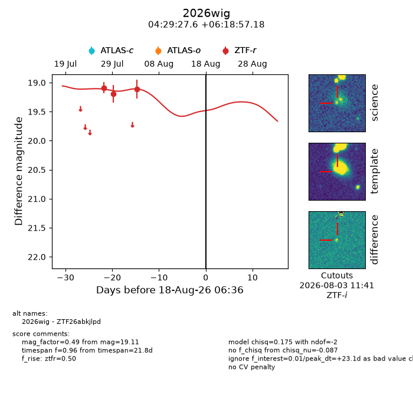
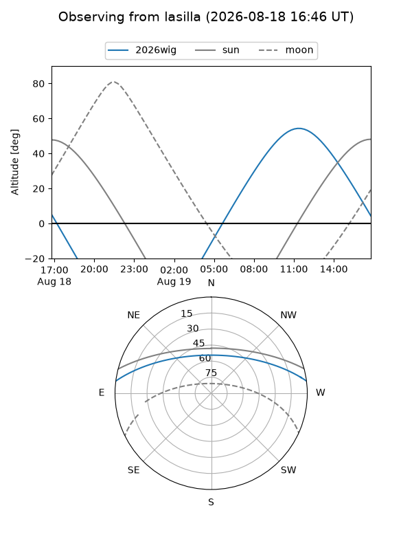
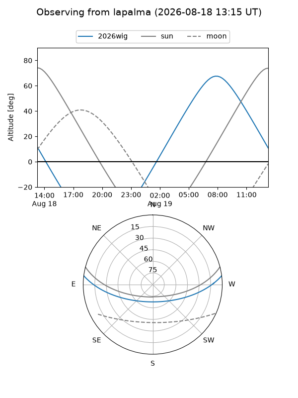
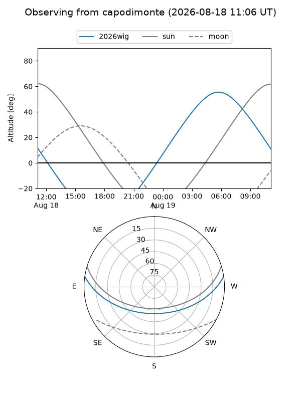
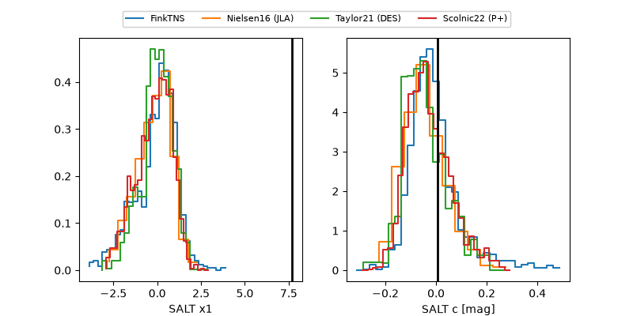

2026wig
Target 2026wig at 2026-08-18 17:30
Aliases and brokers:
FINK-ZTF: ztf.fink-portal.org/ZTF26abkjlpd
Lasair-ZTF: lasair-ztf.lsst.ac.uk/objects/ZTF26abkjlpd
ALeRCE-ZTF: alerce.online/object/ZTF26abkjlpd
YSE-PZ: ziggy.ucolick.org/yse/transient_detail/2026wig
TNS name: wis-tns.org/object/2026wig
Direct TNS query: direct search
alt names
ZTF26abkjlpd (ztf,fink_ztf)
2026wig (tns,yse)
Coordinates:
equatorial (ra, dec) = 67.3651,+6.31588
equatorial (HMS+DMS) = 04:29:27.61,+06:18:57.18
galactic (l, b) = (188.8869,-27.60989)
Flags:
TNS type: nan
peak dt: +23.6
Photometry:
last ztfr=19.11
3 ztfr detections
Lightcurve

Visibility



Additional plots
